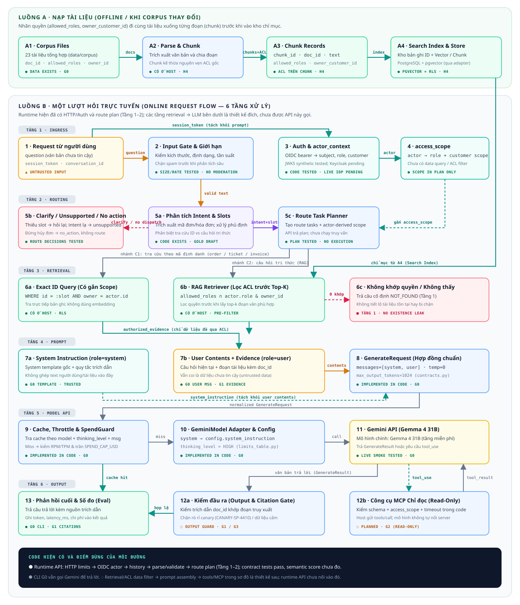

Đã có trong G0
CLI → GenerateRequest(messages) → response cache → throttle/spend guard → Gemini adapter → API.
Theo dõi object nào được tạo, mũi tên nào mang dữ liệu, quyền được gắn vào đâu và prompt cuối cùng gồm những phần nào.
Đường corpus tạo chỉ mục mang metadata quyền. Đường online xác thực người hỏi, lọc dữ liệu rồi mới ghép prompt gửi model.

CLI → GenerateRequest(messages) → response cache → throttle/spend guard → Gemini adapter → API.
Session auth, corpus indexing, ACL retrieval, intent routing và MCP sẽ được thêm theo GATES.md.
Chọn một trường hợp để xem harness chuyển dữ liệu nào đi đâu. Đây là trace thiết kế, chưa phải log chạy thật.
Mỗi đầu ra do model tạo phải được xem là dữ liệu cần kiểm tra trước khi nó làm thay đổi luồng hoặc chạm vào nguồn dữ liệu.
Scope note Sơ đồ mô tả luồng đích để bàn thiết kế. Trạng thái code thật nằm trong GATES.md; không xem node có mặt ở đây là đã triển khai.
Data & permission contract ↗